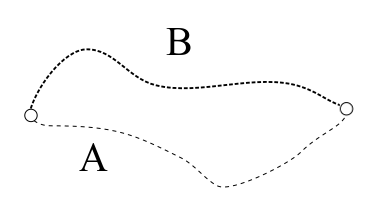
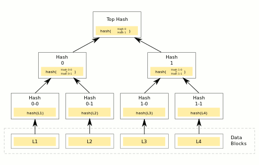
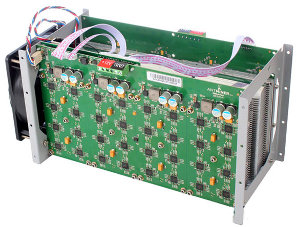
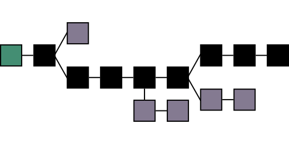

By: Justin Meiners.
View the final code and other resources in the GitHub repo.
This article will teach you how to write a tiny proof-of-work blockchain, focusing on the Bitcoin implementation. I emphasize “proof-of-work” because as we shall see, this is the key innovation that allows Bitcoin to store information in an “objectively” verifiable way. I wrote this mainly for programmers who are curious about how cryptocurrency works. If you’re already an enthusiast, you’ve probably read articles on this topic before. I hope to bring a valuable perspective by focusing on the essentials.
This project will be written in C, although it is easy to translate to other languages.
To start, create a new .c file to place code in.
You will also need to include sha-256.h and sha-256.c for hashes (or use your language’s library).
Note: This is a literate program. This means you are reading the source code right now! The final output was created by “weaving” the blocks of code together.
You are probably familiar with hashes, but just to review, a hash is a function which maps a piece of data of any length to a short checksum. The essential property of a hash is that it’s one way. It’s easy to calculate the output for an input, impossible to know what input produced a given output, and very difficult to find an alternative piece of data that produces the same output.
To verify a piece of data, hash it and compare it with a trusted hash. Since it’s extremely unlikely that different data hashes the same, if they match, we have good reason to believe that the data is valid.
For example, a newspaper could publish the hash of each paper it distributes, and anyone could use that hash to verify whether a given paper was genuine. Ubuntu Linux publishes the hash of each release, allowing you to know you downloaded the real thing and not a virus. (Of course, you still have to trust that the hash you got is the right one.)
To check your knowledge of hashes, here are some questions to consider:
Hash checksums are helpful for verifying the state of data at a fixed snapshot in time. But sometimes, we want to ensure the history of some data over time. Two pieces of data which are the same now might not be equivalent if two different paths were taken to get there.

A bank account is one such example. We not only care about the final balance, but the full history of each deposit and withdrawal. Did our bills get paid? Has someone been withdrawing money from our account? Historical integrity is starting to sound pretty important! Note that a hash of a bank statement is worthless, even if it includes the full record of transactions. As soon as a new transaction occurs, the state completely changes. Someone could just as easily tamper with past transactions, and the hash couldn’t tell you.
A blockchain allows one to verify these kinds of histories. In physics and math, this property is called path dependence, which leads us to a very philosophical definition: a blockchain is a tool for verifying the integrity of path-dependent systems. Just kidding! That’s not very helpful. How about this:
A blockchain is a data structure for storing an ordered sequence of records (blocks) in a tamper-resistant way. Given some small header information, one can verify whether a given record:
Each block is made up of a header and contents. The contents are just arbitrary data to be stored in the chain. The header contains some info about the block and two hashes:
The hash of the contents.
The hash of the previous block header. Including this ensures that anyone with the header can also check that no preceding block has changed.
typedef struct
{
/* Length of the data in the block */
uint32_t contents_length;
/* Hash of the block contents.
Prevents contents from changing
(in Bitcoin this would actually be the "merkle root" */
uint8_t contents_hash[32];
/* prevents previous data from changing */
uint8_t previous_hash[32];
@{proof-of-work entries}
} block_header_t;
Used by 1
(32 is the number of bytes in a sha256 hash.)
The headers thus form a chain by linking each header to the previous.

Applying this to the bank account example, each day’s transactions could be stored in a block. Given the last header in the chain (such as a bank statement), new transactions could be safely added in new blocks, but any changes to previous blocks would be detected. Because each header references the previous block, and that previous block references the one before it, changes propagate like dominos knocking each other over.
The domino effect can also be seen in the expanded equation for the hash of the last block where h is a hash function and C(i) is the contents of the ith block.
See how it includes the contents of each preceding block?
h(h(h(... + C(n-2)) + C(n-1)) + C(n))
If you use Git version control, you are already familiar with this! Each commit is a hash of the state of the code and the hash of the previous commit. If you change an old commit, all future commits must also change. Just like the bank account example, the history of the code matters just as much as the state. Differing histories result in different commit hashes.
The Bitcoin blockchain works just like a bank account. It stores a ledger of financial transactions. But, blockchains can store any kind of data. In this project, we will be storing blobs of text.
Creating a block and adding it to the chain is very straightforward.
The block also needs a reference to a previous block header (or NULL for the genesis block.)
We simply hash the contents and the previous block header and assign it to the new header.
block_header_t build_block(const block_header_t* previous, const char* contents, uint64_t length)
{
block_header_t header;
header.contents_length = length;
if (previous)
{
/* calculate previous block header hash */
calc_sha_256(header.previous_hash, previous, sizeof(block_header_t));
}
else
{
/* genesis has no previous. just use zeroed hash */
memset(header.previous_hash, 0, sizeof(header.previous_hash));
}
/* add data hash */
calc_sha_256(header.contents_hash, contents, length);
/* mining. disucssed later */
mine_block(&header);
return header;
}
Used by 1
Blockchains don’t automatically make a record trustworthy. To verify a block, you must obtain the headers from a trusted party, whether it’s yourself or your bank. A malicious person could give you fake headers in a completely valid chain, and you would have no way to tell they weren’t genuine. They could also add new headers to a blockchain you trust, and the new ones would look just as valid as the old ones! In most cases, if you trust someone enough to give you blockchain headers, you also trust them to just give you the data.
So, blockchains can be useful record-keeping tools among trusted groups, but it’s not clear at this point how they can keep any kind of contested record. The challenge posed by Bitcoin is to store a record of financial transactions that complete strangers can agree on. Internet money shouldn’t require entrusting funds to another person. This is the problem solved by proof-of-work. It provides a simple rule that anyone can use to “objectively” determine whether a given blockchain is the “right” one.
Instead of allowing blocks to be created freely, proof-of-work requires that CPU resources be spent on a time-consuming problem first. This process is called mining. Proof that CPU resources were spent is included in the block itself, allowing anyone to verify that work was actually done. Hence the term “proof-of-work.”
Mining limits the rate at which blocks can be produced to the speed of CPUs. In the Bitcoin network, computers across the world are constantly racing to be the first to solve a problem so they can produce a block. The difficulty of the mining problems ensures that it will take a certain amount of time before anyone can produce a block, adding an additional property: longer chains have had more CPU resources spent making them.
This is what makes the chain verifiable. The valid Bitcoin chain is always the one that is the longest because it is the one that has had the most mining effort spent on it.
“Proof-of-work is essentially one-CPU-one-vote. The majority decision is represented by the longest chain, which has the greatest proof-of-work effort invested in it.” - Satoshi Nakamoto
Proof-of-work also makes it very difficult to tamper with old records or produce a fraudulent chain. To rewrite a block, you have to spend the CPU resources to do so. To go back two blocks requires double the amount of work, and so on. Meanwhile, the original chain is constantly being extended by CPUs across the globe. So not only would an attacker have to redo all the work that has been done, but it would have to do it faster than the rest of the Bitcoin network creates new blocks.
I put the words “objectively” and “right” in quotes because you now know they are a bit dubious. The “right” chain is defined by the consensus of CPU power. A group or individual who wields a lot of CPU power can change the consensus. The right blockchain is the one that the most mining power has been put into. The only objective thing we can determine is if one chain has had more CPU resources spent on it than another. It is certainly a clever system, with carefully structured incentives, but it has limitations.
“Bitcoin can thus be understood as a technology that converts electricity to truthful records through the expenditure of processing power.” - Safedean Ammous.
To add proof-of-work, we add an additional requirement to the chain, which is that the hash of any block header must be less than some target hash.
In other words h(header) < T.
By “less than” we mean the usual byte by byte lexicographic comparison, like alphabetical order.
(For example 0000 0001 is less than 0000 0010)
That’s all we need. A block header is valid if it is within the range, and invalid otherwise.
Finding a hash that fits this requirement is the time-consuming problem that requires CPU resources.
The target T can be any hash. However, the smaller (in ordering) it is, the more difficult it is to find a valid hash due to the lower number of hashes within the valid range.
The target may be different for each block. This allows Bitcoin to adjust mining difficulty to adapt to improving CPUs. In our project, we will use a constant target.
/* this controls the difficulty.
I chose this target because it works well on my computer.
Feel free to try out others. */
uint8_t target[32];
memset(target, 0, sizeof(target));
target[2] = 0x0F;
/* too hard?: try target[2] = 0xFF
too easy?: try target[2] = 0x01 */
Used by 1
Right now, the header is immutable. It contains only the contents hash and the previous block hash, both of which have already been determined and can’t be changed. So to get the header hash below the target, we need to add a few additional fields to the headers. These are called the nonce and timestamp.
Add the following to the block_header_t struct from before.
/* when this block started being mined */
uint32_t timestamp;
/* nonce.
this is adjusted by the miner,
until a suitable hash is found */
uint32_t nonce;
Used by 1
To make a block header valid, the nonce is adjusted until the header’s hash is in the valid range. Searching for a hash can take some time depending on the difficulty. There is no rhyme or reason to guessing the nonce. The miner just tries as many as it can!
Let’s write a loop that tests numbers in order:
(It will be placed in a mining function below.)
/* adjust the nonce until the block header is < the target hash */
uint8_t block_hash[32];
for (uint32_t i = 0; i < UINT32_MAX; ++i)
{
header->nonce = i;
calc_sha_256(block_hash, header, sizeof(block_header_t));
if (memcmp(block_hash, target, sizeof(block_hash)) < 0)
/* we found a good hash */
return;
}
Used by 1
As you can imagine, this brute force operation of adjusting numbers, and hashing again can take a lot of CPU time!
It’s possible that the miner tries all the numbers that can be stored in a uint32 (up to 4294967295) and never finds a valid hash.
This is what the timestamp field is for.
If all numbers have been tried, the timestamp is reset, and the process starts again.
Here is the complete mining function:
void mine_block(block_header_t* header)
{
@{target}
while (1)
{
/* MINING: start of the mining round */
header->timestamp = (uint64_t)time(NULL);
@{nonce search}
/* The uint32 expired without finding a valid hash.
Restart the time, and hope that this time + nonce combo works. */
}
/* this should never happen */
assert(0);
}
Used by 1
In the real Bitcoin network, miners are connected in a peer-to-peer network. They receive transactions from clients to include in blocks and share blocks they know about, cooperatively building a chain.
Our tiny blockchain won’t have any network or peers, and will just run locally on a computer. However, we still want to get a real proof-of-work effect; that longer chains have more work spent on them. So we need to pick a task that can run without user intervention.
The task I chose is to take lines of text from a file and encode them in blocks, as fast as possible. This isn’t very useful, but it is still a good illustrative example of the constant production of blocks on the Bitcoin network. Storing text in the chain actually follows Bitcoin tradition, where the genesis block includes this headline from a 2009 English newspaper:
“The Times 03/Jan/2009 Chancellor on brink of second bailout for banks”

We will follow the tradition and include it for our genesis block.
printf("creating genesis block...\n");
char genesis_data[] = "The Times 03/Jan/2009 Chancellor on brink of second bailout for banks";
block_header_t genesis = build_block(NULL, genesis_data, sizeof(genesis_data));
Used by 1
So we don’t have to worry about finding files to read, the program will read text line by line from stdin and put each line in a block. The block headers will be written into a file as they are mined.
@{genesis block}
int block_no = 0;
block_header_t previous = genesis;
while (!feof(stdin))
{
/* hash the solved header. (only for display purposes) */
uint8_t test_hash[32];
calc_sha_256(test_hash, &previous, sizeof(block_header_t));
printf("done. nonce: %i hash: ", previous.nonce);
fprint_hash(stdout, test_hash);
printf("\n");
/* dump header to a file */
fwrite(&previous, sizeof(block_header_t), 1, output_file);
/* read data to put in the block */
char line_buffer[LINE_MAX];
fgets(line_buffer, LINE_MAX, stdin);
printf("creating block %i: ", block_no);
printf("%s\n", line_buffer);
uint64_t size = strnlen(line_buffer, LINE_MAX) + 1;
block_header_t header = build_block(&previous, line_buffer, size);
previous = header;
++block_no;
}
Used by 1
The project is almost ready, but we need a few more boring bits of code. These are not relevant to understanding the actual blockchain.
void fprint_hash(FILE* f, uint8_t* hash)
{
fprintf(f, "0x");
for (int i = 0; i < 32; ++i)
fprintf(f, "%02x", hash[i]);
}
Used by 1
#include <stdio.h>
#include <stdlib.h>
#include <stdint.h>
#include <string.h>
#include <time.h>
#include <memory.h>
#include <assert.h>
#include "sha-256.h"
#define LINE_MAX 4096
@{print hashes}
@{block header}
@{mining}
@{build block}
int main(int argc, const char* argv[])
{
FILE* output_file = fopen("chain.bin", "wb");
@{input loop}
fclose(output_file);
return 1;
}
At this point, you should have all the code to compile the project. If you are not sure where something belongs, follow the references or refer to the final code
I have provided Plato’s Gorgias as a sample text to store in our blockchain. Go ahead and download it.
Run the program by inputting the file to stdin.
cat ./gorgias.txt | ./blockchain
creating genesis block...
done. nonce: 427455 hash: 0x000003e9ea9bb66eae1b34a4a1b482f3fcf0ee1ca0589ae16de8a6c9a410285f
creating block 0: The Project Gutenberg EBook of Gorgias, by Plato
If the program produces blocks too slowly, or quickly, adjust the target variable.
We have only just scratched the surface, and there is much more to learn from Bitcoin. You will certainly want to read the original whitepaper. Here are a few topics to get you started.

The block header we wrote above closely matches the real Bitcoin header. One difference is that instead of storing a contents hash, the root hash of a Merkle tree is stored instead. The Merkle hash fulfills the same role of verifying the contents, and it also makes it easier to check whether an individual transaction is in the block.

“One CPU, one vote” no longer describes the mining process. It has largely been overtaken by professional mining farms so that individual computers cannot compete.
The most important metric in mining performance is how many hashes you can produce in a second. GPUs and specially designed hardware called ASICs can calculate sha256 hashes far faster than CPUs.
Read The State of Cryptocurrency Mining. Should we return to “One CPU, one vote”? Is it even possible?

(Image thanks to Nakamoto Institute)
As I mentioned, Bitcoin miners create and share blocks in a peer-to-peer network. A lot must happen to ensure peers stay connected and that new blocks are spread throughout the network. Due to network delays, several alternative tails may form and start competing to be the longest. The nodes will follow a few of these until a clear winner arises. See Orphan Blocks.
A major debate in the Bitcoin community occurred over the block size and resulted in the fork of Bitcoin Cash. Large blocks can store more transactions, and hence increase the speed of the chain, but they also take longer to propagate around the internet. This may restrict Bitcoin participants to only those with fast internet access (like data centers), or introduce more chain reorganizations as blocks become slower to propagate.
Why do miners mine? Why should they include transactions from individuals in the chain? Do miners control the chain? Does Bitcoin really eliminate the costs of transaction enforcement? How could someone disrupt Bitcoin?
These are all great questions to learn about, but you may have a harder time finding reliable information.
Special thanks to my reviewers for editing and feedback: